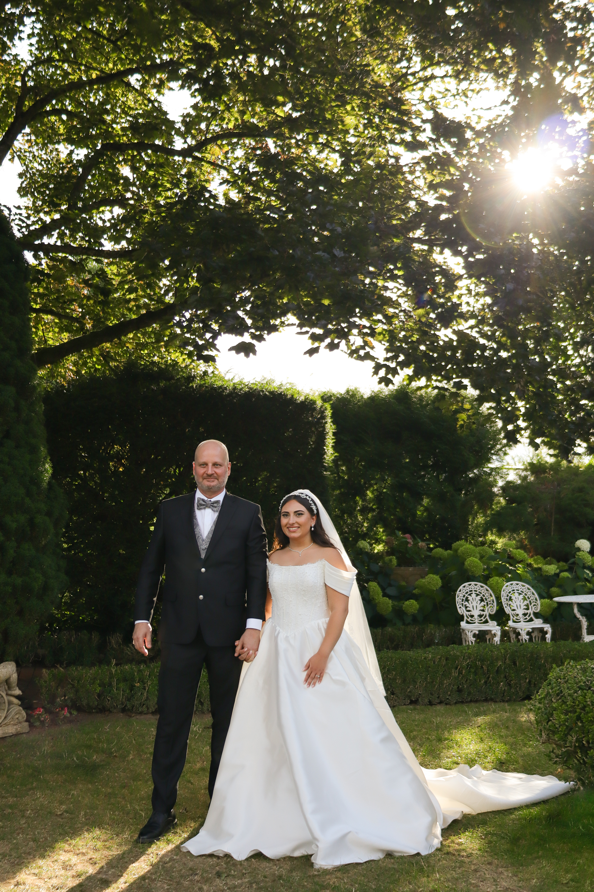

Unser Ansatz
Unsere Philosophie
Ein Hochzeitstag besteht aus so viel mehr als den Momenten, die geplant sind. Es sind oft die kleinen Dinge dazwischen, die später die größte Bedeutung bekommen – ein vertrauter Blick, eine kurze Berührung, die Aufregung kurz vor dem Ja-Wort oder Menschen, die gemeinsam mit euch diesen besonderen Tag erleben.
Unsere Arbeit bedeutet für uns, genau diese Erinnerungen für euch zu bewahren. Wir möchten Bilder schaffen, in denen ihr euch selbst wiederfindet und die euch auch Jahre später noch an das Gefühl dieses Tages erinnern.
Dabei begleiten wir euch mit einem besonderen Blick für Ästhetik, Emotionen und Details. Wir halten fest, was euren Tag zu eurem macht – die großen Augenblicke genauso wie all das Schöne, das vielleicht nur für einen kurzen Moment passiert.
Damit aus einem einzigen Tag Erinnerungen für ein ganzes Leben werden.